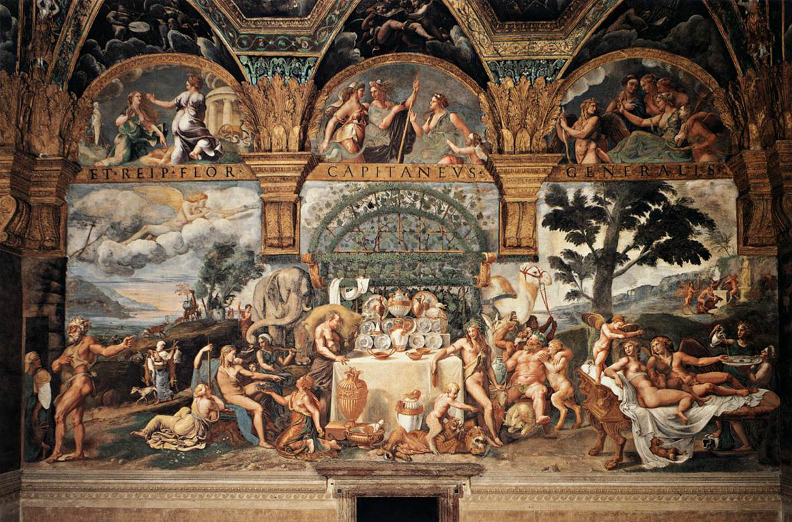

Musei

Museo di Palazzo Ducale
Il museo conserva opere d'arte, stanze storiche e testimonianze legate alla storia della città e alla famiglia Gonzaga.

Museo di Palazzo Te
Il museo permette di visitare alcune delle sale artistiche più famose del Rinascimento italiano, ricche di affreschi e decorazioni.